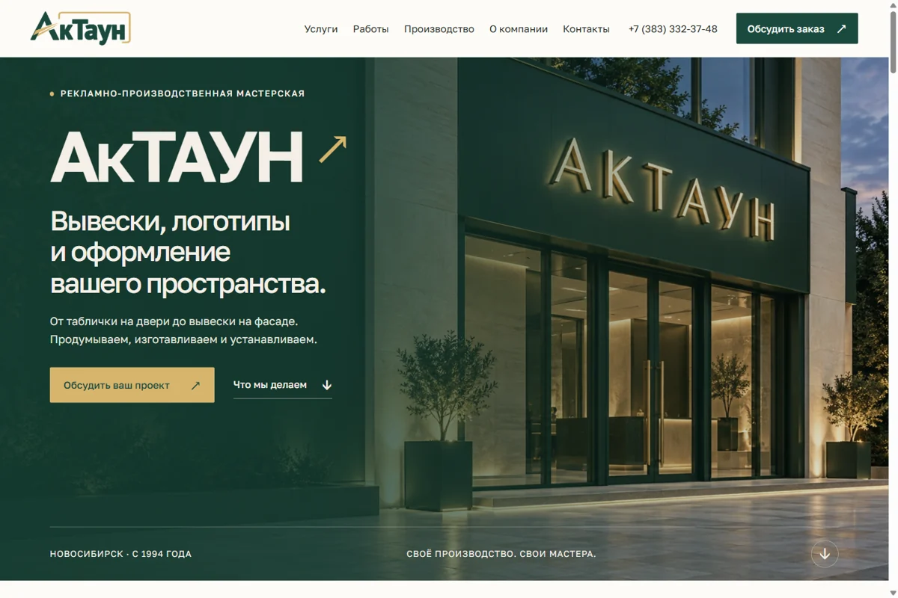
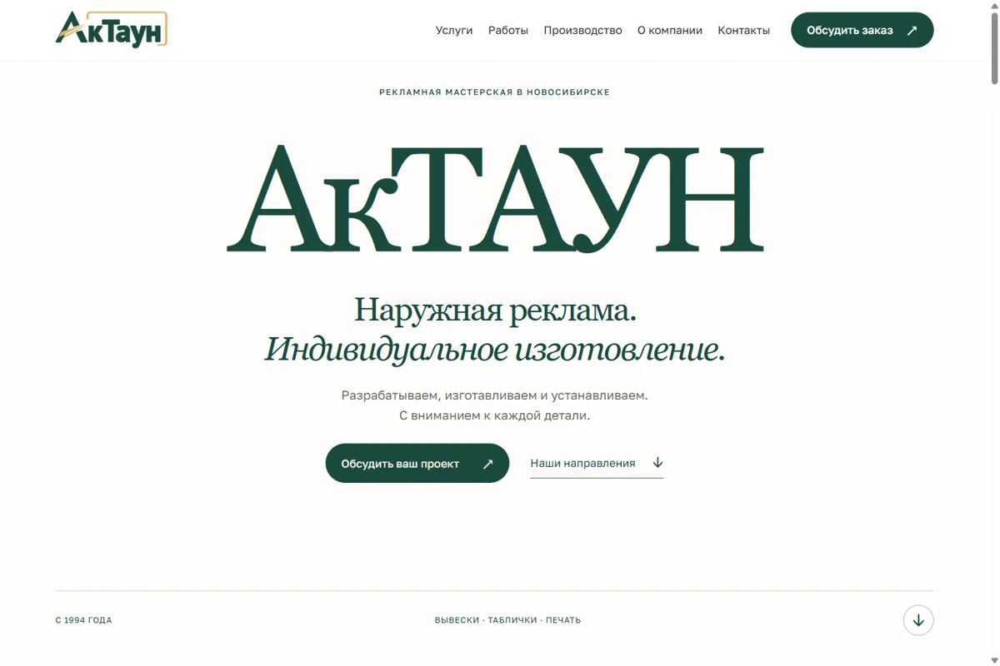
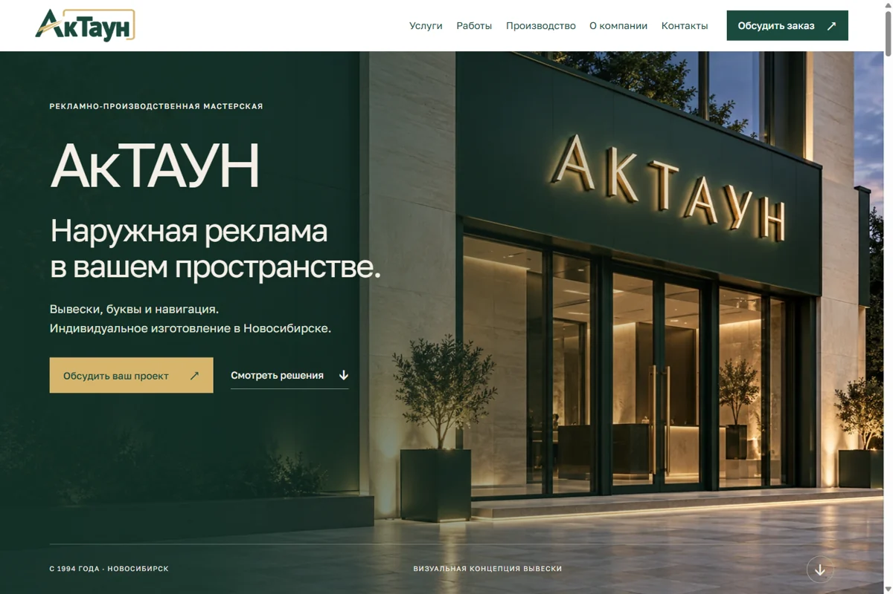
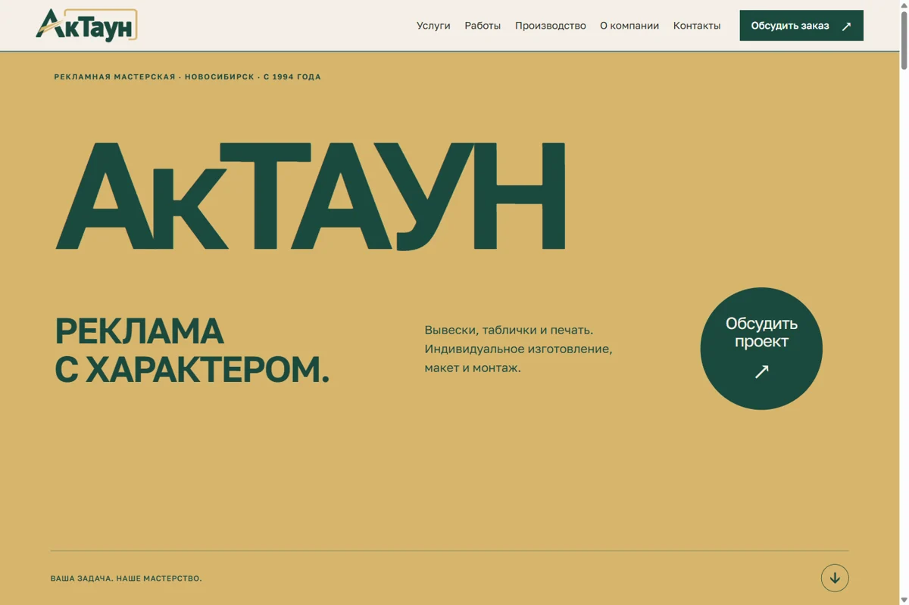
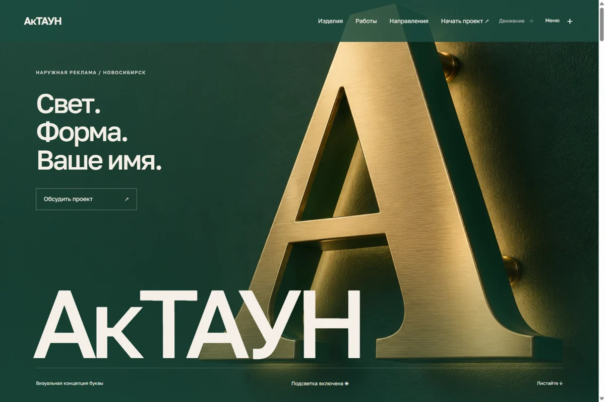
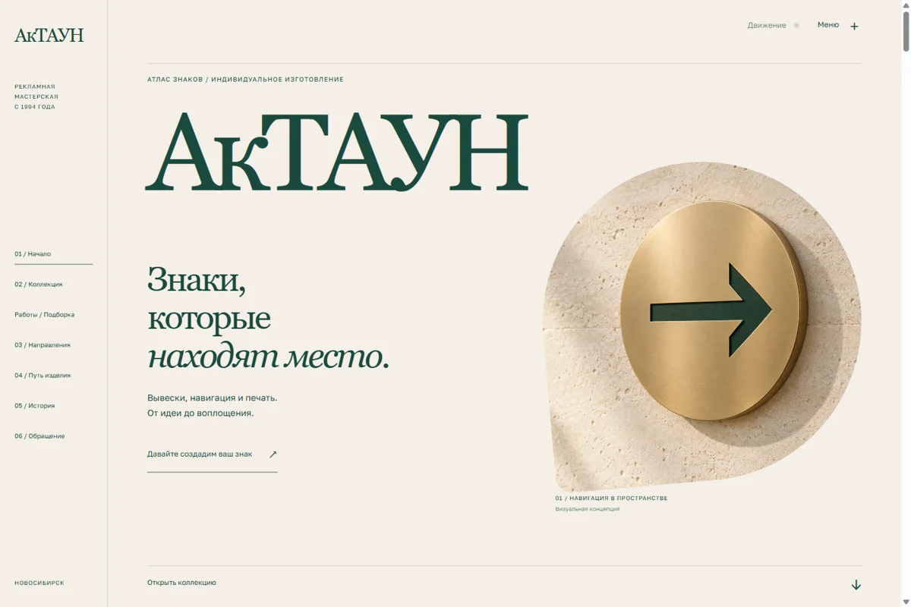
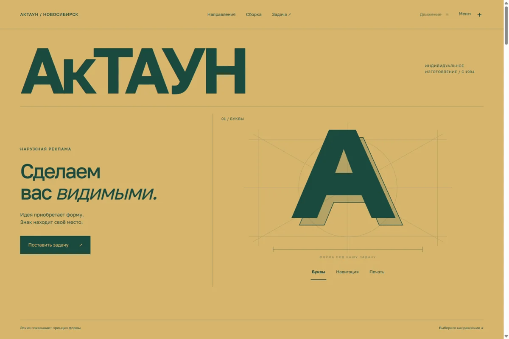

Открыть вариант ↗АкТАУН / Выбираем вместе
Варианты
вашего сайта.
Семь разных настроений в ваших цветах.
Откройте любой вариант и посмотрите, какой вам ближе.

Открыть вариант ↗
Открыть вариант ↗
Открыть вариант ↗
Открыть вариант ↗
Открыть вариант ↗
Открыть вариант ↗Можно выбрать целиком.
Или собрать своё.
Например, взять первый экран одного варианта и подачу работ другого. Посмотрите сайты и на телефоне — там всё тоже работает.
Вернуться к вариантам ↑